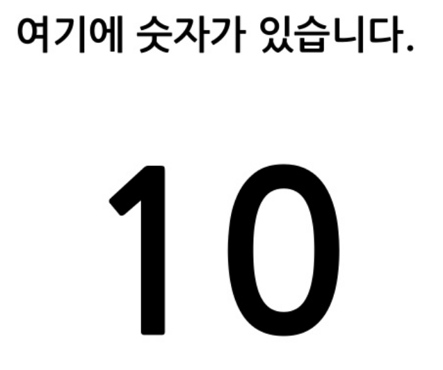
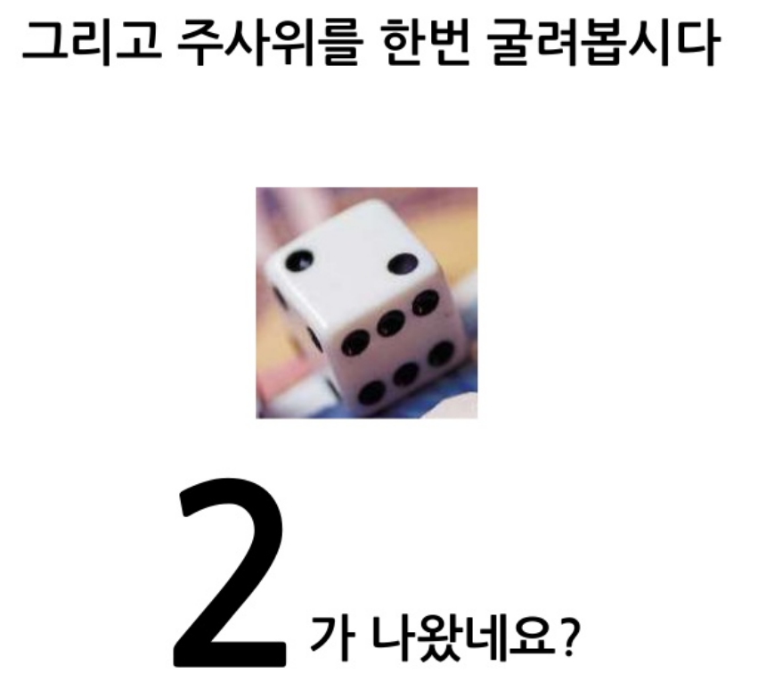
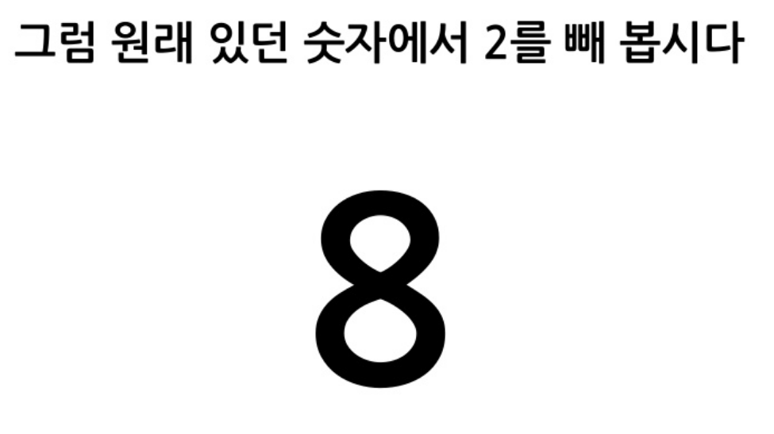
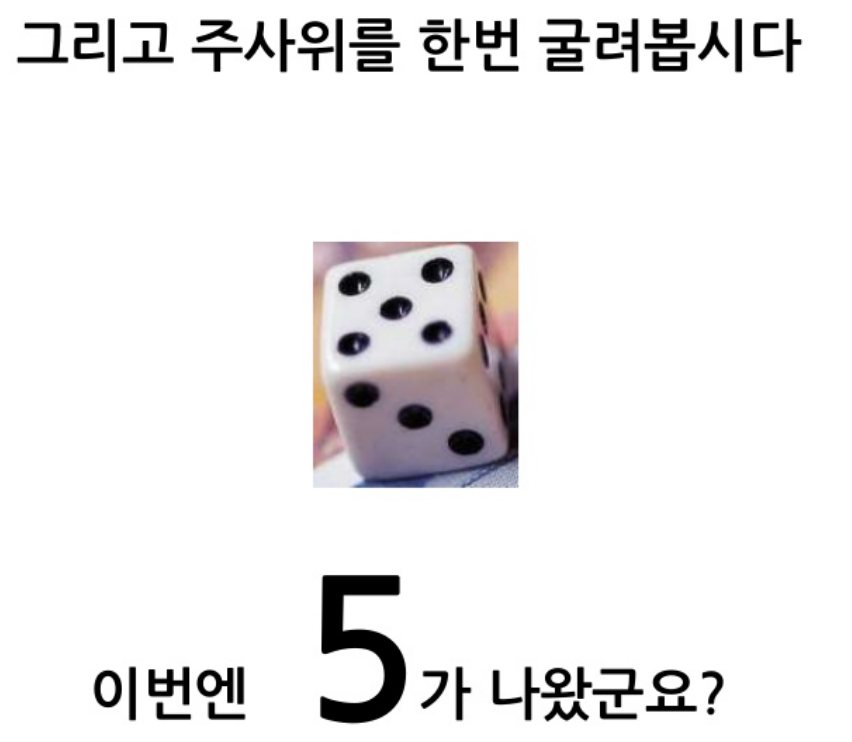
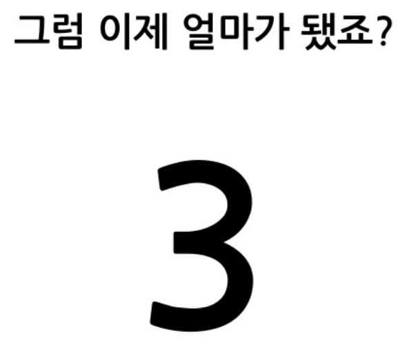
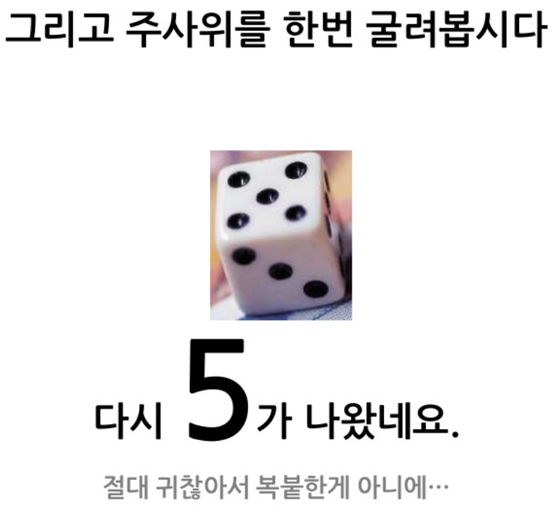
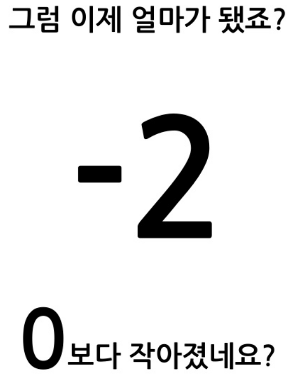
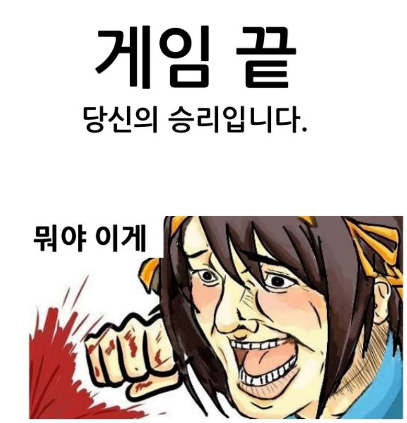

03 · MOTIVATION
동기
같은 규칙에 의미를 붙여
플레이어를 움직이게 합니다.

먼저 숫자만
움직여 보겠습니다
규칙은 분명하지만
아직 플레이할 이유는 없습니다.








숫자에 의미를 붙이면
전투가 됩니다
같은 계산이지만 캐릭터, 무기, 적이
행동의 이유를 만듭니다.


강한 동기는
이야기까지 연결합니다
목표를 넘어 관계와 감정이 생기면
플레이어는 결과를 자기 일처럼 받아들입니다.

숫자에 의미를 붙이면
플레이가 됩니다.